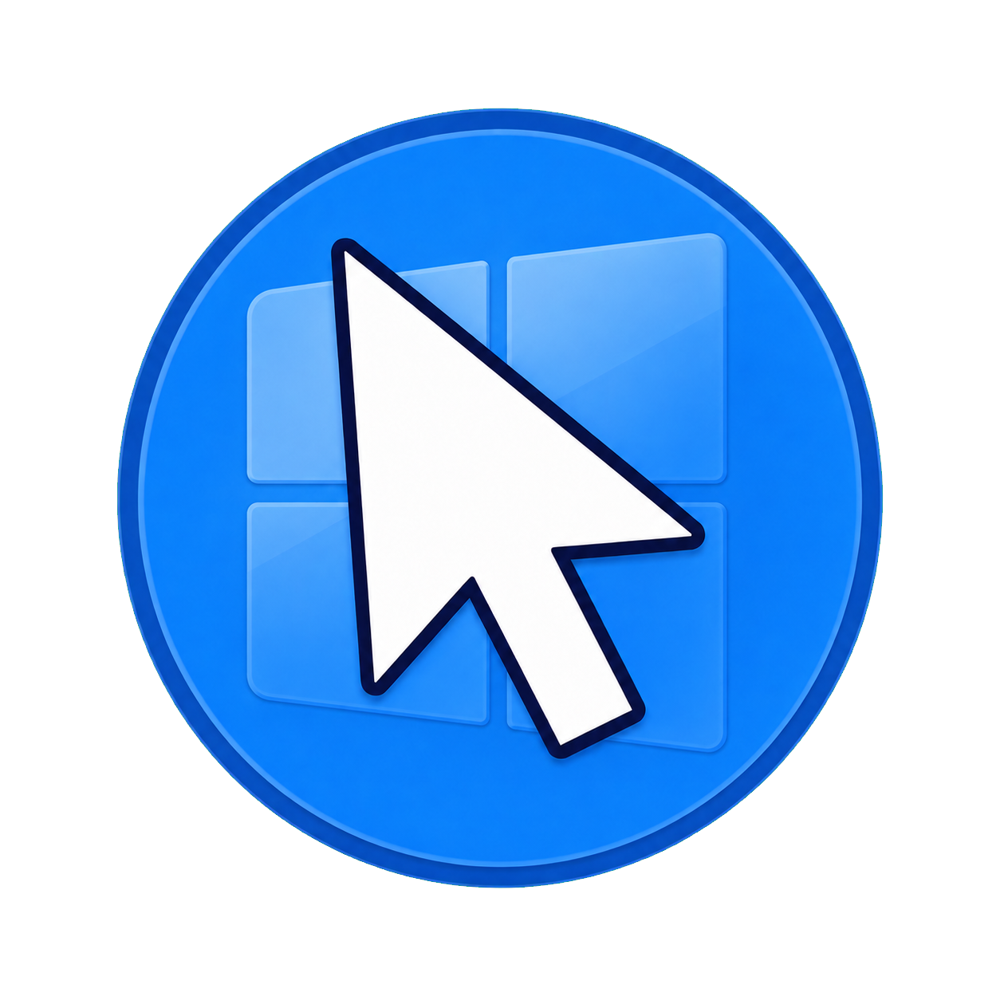

Live camera sharing
ViewOn Link
한 기기의 카메라 화면을 다른 기기에서 실시간으로 확인할 수 있는 연결 앱입니다. QR로 빠르게 연결하고, 같은 Wi-Fi 환경에서 필요한 순간 보조 화면처럼 사용할 수 있습니다. 스마트폰이 하나일 때는 돋보기 기능을 사용하세요.

Crafting Utility for Your Daily Life
Live camera sharing
한 기기의 카메라 화면을 다른 기기에서 실시간으로 확인할 수 있는 연결 앱입니다. QR로 빠르게 연결하고, 같은 Wi-Fi 환경에서 필요한 순간 보조 화면처럼 사용할 수 있습니다. 스마트폰이 하나일 때는 돋보기 기능을 사용하세요.

Windows pointer utility
화면에서 마우스 포인터를 놓쳤을 때 빠르게 다시 찾도록 도와주는 Windows 유틸리티입니다. 마우스를 빠르게 흔들거나 Ctrl 키를 두 번 빠르게 누르면 포인터를 크게 표시하며, Windows 시작 시 자동 실행하도록 설정할 수 있습니다.
Windows용 다운로드
Quick notes & todos
생각나는 순간 바로 기록하고, 메모와 할 일을 한 곳에서 가볍게 정리할 수 있는 심플한 기록 앱입니다. 자동 저장, 빠른 메모, 잠금, 고정, 체크리스트 기능으로 광고 없이 기록에만 집중할 수 있습니다.
ViewOn은 개인 개발자 Natchrai가 만들고 있는 앱 시리즈입니다.
일상에서 바로 쓸 수 있는 실용적인 도구를 하나씩 만들어가고 있습니다.